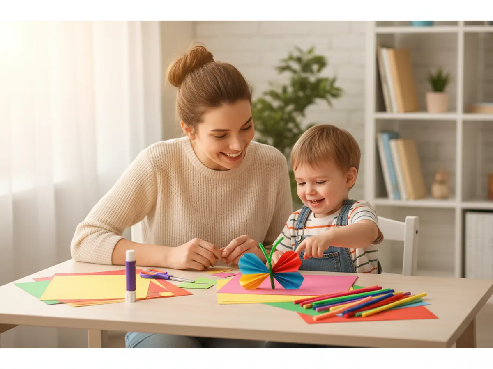
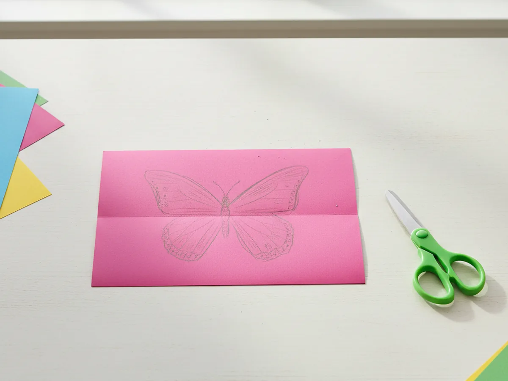
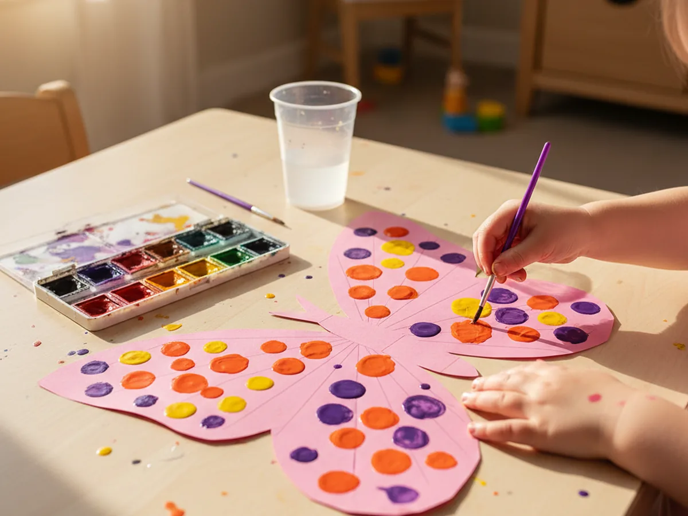
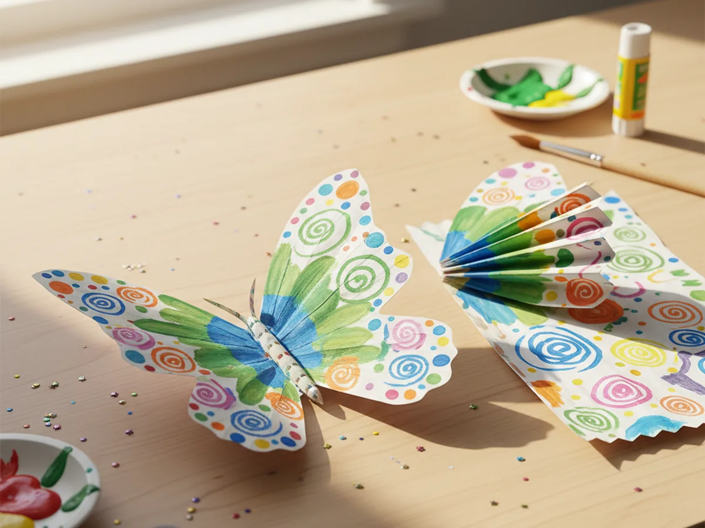
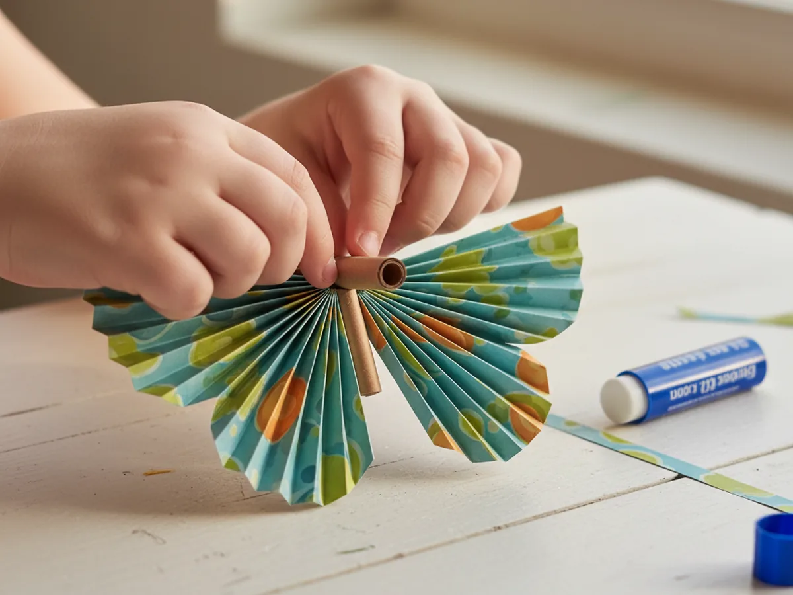
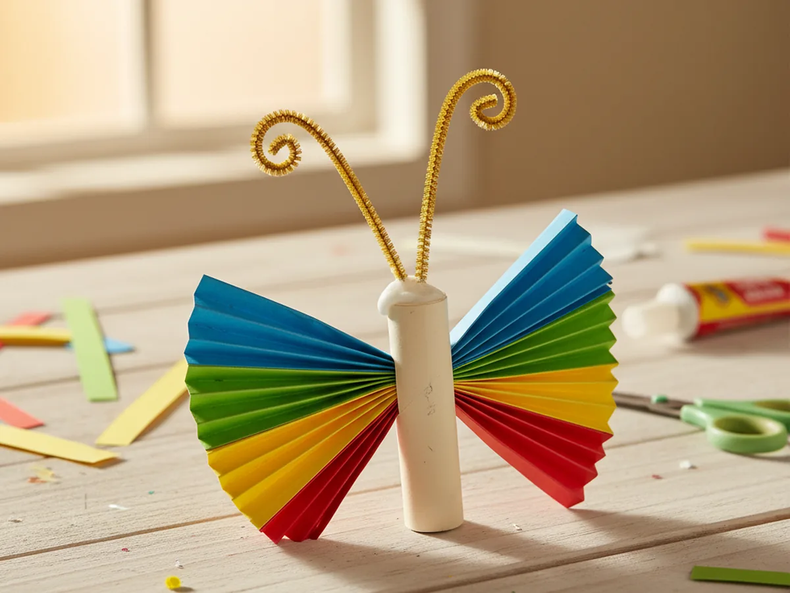
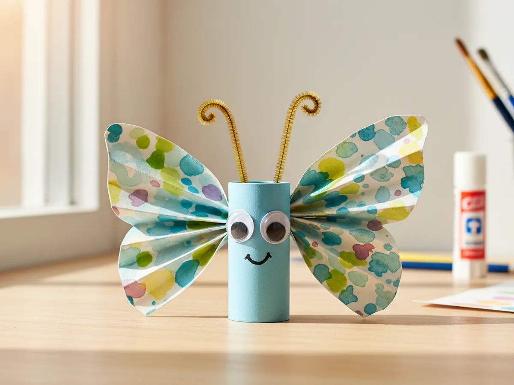

Few things light up a child's face quite like a butterfly landing nearby. The wings, the colors, the fluttery magic of it all. This paper craft butterfly captures exactly that feeling and turns it into a simple 20-minute project you and your little one can make together using supplies you probably already have at home. No experience needed, no complicated folds, just colorful construction paper, a little imagination, and a sweet afternoon together.
Whether you are making it for spring, as a bedroom decoration, or just because it's a rainy Tuesday and you need something fun to do, this paper butterfly craft delivers every time. Kids love it, and you will too.
Why Kids Love This Craft
Butterflies are endlessly fascinating to young children, and making one from paper gives them a sense of real creative ownership. There is something thrilling about turning a flat sheet of paper into something that looks like it could actually fly.
What makes this paper craft butterfly especially wonderful for kids is the decorating step. Each child chooses their own colors, patterns, and shapes for the wings, so every butterfly is completely unique. That open-ended creativity builds confidence and lets even the quietest little one feel like a true artist.
From a developmental standpoint, this craft packs in a lot of good practice. Cutting along a curved line builds fine motor control. Accordion folding strengthens hand coordination. Gluing and assembling the pieces teaches patience and sequencing. And the natural symmetry of butterfly wings gives children an early, intuitive introduction to symmetry through play. Best of all, the finished result is something they will genuinely want to show off. It is display-worthy and sweet, which means shared pride is almost guaranteed. 🦋

What You'll Need
Here is everything you will need to make your paper craft butterfly. Lay it all out before you sit down together so the activity flows smoothly from start to finish.
- Crayola Construction Paper, 240 sheets in 12 colors, the more colors available, the more creative the wings.
- Watercolor paint set for kids, 36 colors, perfect for painting bright, blended wing patterns.
- Elmer's Disappearing Purple Glue Sticks, 30-count, washable and easy for small hands to use.
- Fiskars Training Scissors for Kids 3+, spring-action and blunt-tipped for safe, easy cutting.
- Pipe cleaners, 1050 pieces in 30 assorted colors, for making the curly antennae.
- Self-adhesive googly eyes, 800-piece assorted set, peel-and-stick makes this step extra fun.
- A pencil, for tracing the wing shape before cutting.
- Markers or dot stickers for extra wing decoration (optional but always a hit).
Step-by-Step Instructions
Follow these steps at your own pace. The craft is beginner-friendly all the way through, so there is nothing to stress about. Every step is designed to feel easy and enjoyable for both of you.
Step 1: Cut Out the Butterfly Wings
Fold a sheet of construction paper in half lengthwise, with the fold on the left side. Using a pencil, draw a large wing shape on the top half of the folded paper: think a rounded top lobe and a slightly smaller bottom lobe, like a real butterfly wing. The beauty of cutting through both layers at once is that both wings come out perfectly symmetrical, even for the youngest crafters. Once cut, unfold the paper to reveal the full set of wings. You can also use a second, different-colored sheet to make a second pair of smaller inner wings for a layered look.

Step 2: Decorate the Wings
This is the step every child gets excited about. Lay the wings flat on the table and let your child go wild with watercolor paint, markers, dot stickers, or any combination of all three. Encourage them to create spots, swirls, stripes, or zigzags. There is no wrong pattern for a paper butterfly craft because real butterflies come in endless varieties. If you are using watercolors, let the wings dry for a few minutes before moving on to the next step.

Step 3: Fold the Wings Accordion-Style
Once the wings are decorated and dry, it is time to give them texture and dimension. Starting from the bottom edge of the wings, fold the paper up about half an inch, then fold it back the other way, then forward again, continuing all the way up to the top in a tight accordion or fan pattern. Repeat on the second pair of wings if you made inner wings. This folding step is what gives the finished paper craft butterfly its beautiful, feathery look, and kids love the satisfying back-and-forth motion of making the folds.

Step 4: Make the Body and Attach the Wings
Cut a strip of construction paper about 1 inch wide and 6 inches long. Roll it tightly into a small tube and secure it with a glue stick or a dab of school glue. This is the butterfly's body. While the glue sets, pinch the center of your accordion-folded wings together so they fan out on both sides. If you made inner wings, layer them under the outer wings and pinch all layers together at the center. Lay the body tube along the pinched center and wrap a small strip of paper or a twist tie around both to hold everything firmly in place. The wings should now fan out beautifully on either side of the body.

Step 5: Twist On the Antennae
Take two pipe cleaners and fold each one in half. Twist the folded end a couple of times to create a tight little loop, then curl the two free ends into small spirals using your finger or a pencil. These spirals are the antennae tips, and children find curling them wonderfully satisfying. Tuck the twisted loop end into the top of the body tube and secure it with a small dab of glue. Let your child choose the color of the antennae. Metallic gold or bright purple pipe cleaners always look especially striking against colorful wings.

Step 6: Add the Eyes and Final Touches
Peel the backing off two self-adhesive googly eyes and press them firmly onto the front of the body tube. Let your child use a marker to draw a tiny smile below the eyes if they want. From here, they can add anything they like: glitter glue dots on the wings, small sticker hearts, additional pipe cleaner decorations, or a bit of ribbon tied around the center. Every added detail makes the butterfly feel more personal. Stand back and admire what you made together. The finished paper butterfly craft looks beautiful displayed on a window, pinned to a bulletin board, or hanging from a string on the ceiling. 🌸

Variations to Try
Tissue Paper Wings: Instead of construction paper, cut the wing shapes from white tissue paper and let your child paint over them with diluted watercolors. The colors bleed and blend in a gorgeous, translucent way that looks like real butterfly wings held up to the light. Display these on a sunny window for a stunning effect.
Mini Butterfly Mobile: Make three or four smaller butterflies using the same steps, then hang them from different lengths of string tied to a wooden dowel or a sturdy stick. Each butterfly can be a different color family, and the mobile looks wonderful spinning gently in a bedroom. This is a lovely option for older kids, ages 5 and up, who enjoy a slightly longer project.
Learning Butterfly: Before decorating the wings, lightly write letters, numbers, or sight words in pencil inside the wing panels. Let your child trace over them with markers as part of the decorating step. The learning feels like play, and the finished paper craft butterfly doubles as a keepsake reminder of what they were practicing that week.
Final Thoughts
This paper craft butterfly is one of those projects that looks impressive but comes together in the most relaxed, low-pressure way. It takes about 20 minutes, uses simple supplies, makes almost no mess, and ends with something your child will genuinely beam about. Whether you tuck it into a spring display, hang it in a bedroom window, or send it off as a sweet handmade gift, it carries that unmistakable quality of something made with love and care.
Give yourself credit for making time to create together. Those simple craft afternoons are the moments kids remember long after the butterfly has been retired to a memory box. Happy crafting! ✂️
More Crafts You'll Love
If you enjoyed making this butterfly, these other paper crafts are just as easy and just as fun: